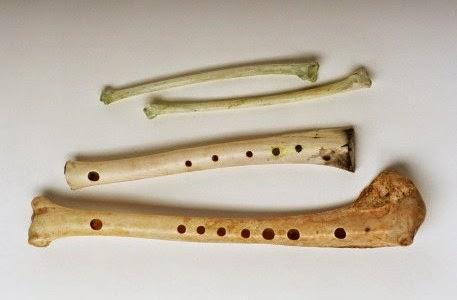
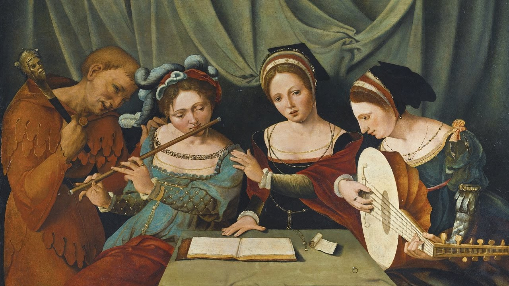
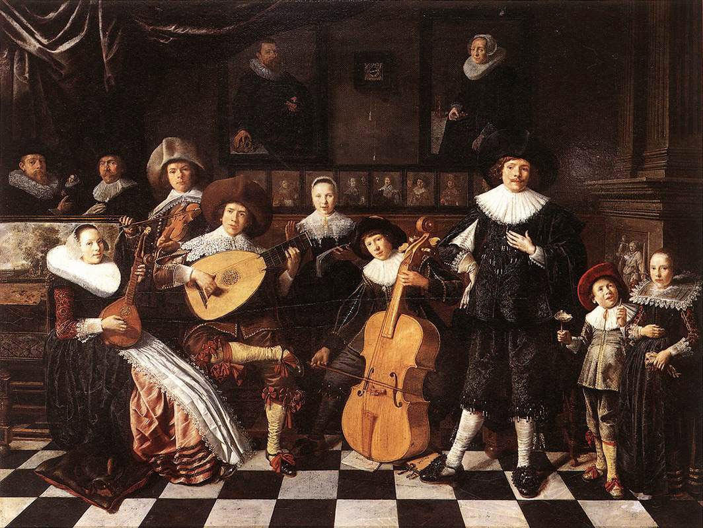
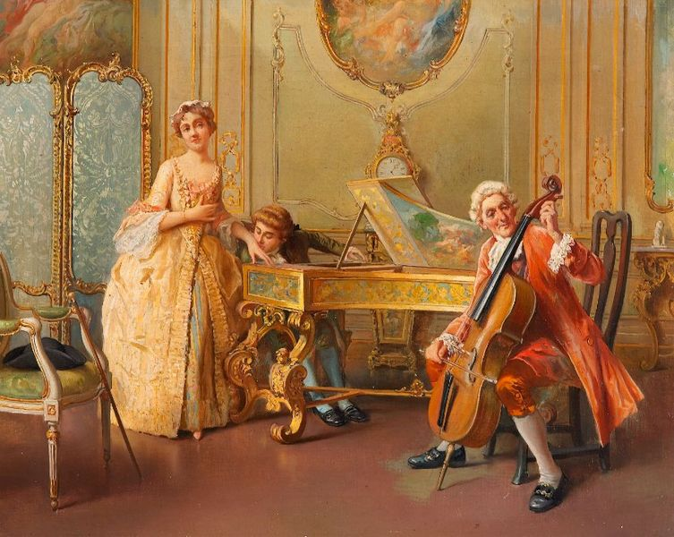
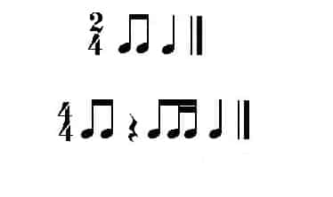
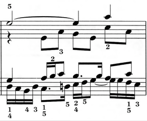
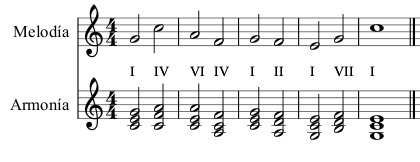
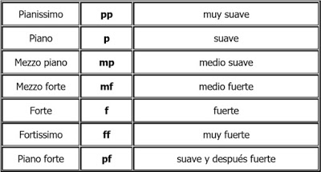
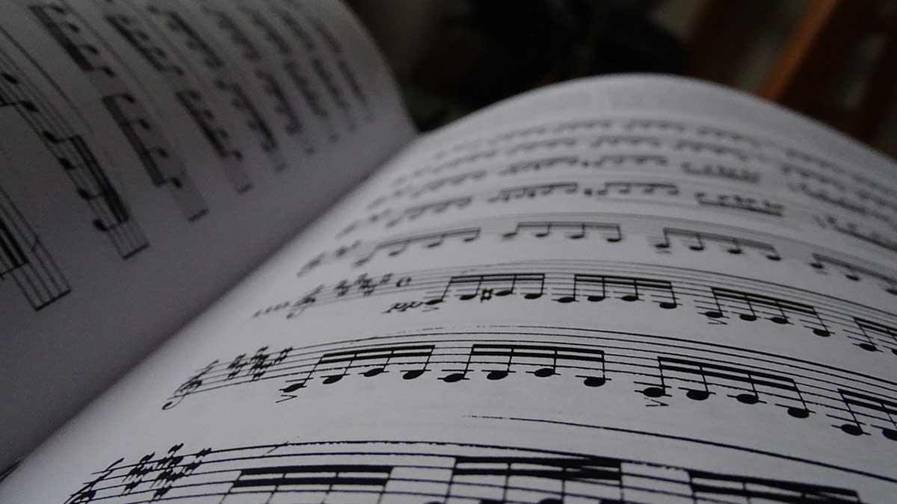

Música para vivir

Definición
La música (del griego: μουσική [τέχνη] - mousikē [téchnē], «el arte de las musas») es, según la definición tradicional del término, el arte de crear y organizar sonidos y silencios respetando los principios fundamentales de la melodía, la armonía y el ritmo, mediante la intervención de complejos procesos psicoanímicos. El concepto de música ha ido evolucionando desde su origen en la Antigua Grecia, en que se reunía sin distinción a la poesía, la música y la danza como arte unitario. Desde hace varias décadas se ha vuelto más compleja la definición de qué es y qué no es la música, ya que destacados compositores en el marco de diversas experiencias artísticas fronterizas han realizado obras que, si bien podrían considerarse musicales, expanden los límites de la definición de este arte.
La música, como toda manifestación artística, es un producto cultural con múltiples finalidades, entre otras, la de suscitar una experiencia estética en el oyente, la de expresar sentimientos, emociones, circunstancias, pensamientos o ideas, y cada vez más, cumplir una importante función terapéutica a través de la musicoterapia. La música cumple una función de vital importancia en el desarrollo cognitivo del ser humano. Está relacionada con el pensamiento lógico matemático, la adquisición del lenguaje, el desarrollo psicomotriz, las relaciones interpersonales, el aprendizaje de lenguas no nativas y a potenciar la inteligencia emocional, entre otros. Por este motivo, la música debe estar presente en cualquier plan educativo moderno y ser reconocida como una disciplina imprescindible dentro de la enseñanza obligatoria. La música es un estímulo sonoro que afecta al campo perceptivo del individuo; así, el flujo sonoro puede cumplir variadas funciones (entretenimiento, comunicación, ambientación, diversión, etc.). En muchas culturas, la música es una parte importante del modo de vida de la gente, ya que desempeña un papel fundamental en rituales religiosos, en las ceremonias de rito de paso (por ejemplo, la graduación y el matrimonio), en las actividades sociales (por ejemplo, en el baile) y en las actividades culturales que van desde el canto aficionado en el karaoke hasta tocar en una banda amateur de funk o cantar en un coro comunitario. La gente puede hacer música por afición, como un adolescente que toca el chelo en una orquesta juvenil, o trabajar como músico o cantante profesional. La industria musical incluye a las personas que crean nuevas canciones y piezas musicales (como los cantautores y los compositores), a las personas que interpretan música (que incluyen a los músicos de orquesta, de bandas de jazz y de bandas de rock, a los cantantes y a los directores de orquesta), a las personas que graban música (productores musicales e ingenieros de sonido), a las personas que organizan giras de conciertos y a las personas que venden grabaciones, partituras y partituras a los clientes. Incluso una vez que se ha interpretado una canción o pieza, la crítica musical, el periodismo musical y la musicología pueden valorar y evaluar la pieza y su interpretación.
Historia de la música
Prehistoria
La música prehistórica sólo se puede teorizar sobre la base de los hallazgos de los sitios arqueológicos paleolíticos. A menudo se descubren flautas talladas en huesos en los que se han perforado agujeros laterales; se cree que se soplaban en un extremo como el shakuhachi japonés. Se piensa que la flauta de Divje Babe, tallada en el fémur de un oso de las cavernas, tiene al menos 40 000 años. Se han recuperado instrumentos como la flauta de siete agujeros y varios tipos de instrumentos de cuerda, como el ravanahatha, de los yacimientos arqueológicos de la civilización del valle del Indo. La India tiene una de las tradiciones musicales más antiguas del mundo; las referencias a la música clásica india (marga) se encuentran en los Vedas, antiguas escrituras de la tradición hindú. La colección más antigua y más grande de instrumentos musicales prehistóricos se encontró en China y data de entre el 7000 y el 6600 a. C. El «Himno hurrita a Nikkal», que se encuentra en tablillas de arcilla que se remontan aproximadamente al 1400 a. C., es la obra musical escrita más antigua que se conserva.
Cultura asiática
La música clásica india (marga) es una de las tradiciones musicales más antiguas del mundo. La civilización del valle del Indo tiene esculturas que muestran danzas e instrumentos musicales antiguos, como la flauta de siete agujeros. Se han recuperado varios tipos de instrumentos de cuerda y tambores de Harappa y Mohenjo-Daro mediante excavaciones realizadas por Mortimer Wheeler. El Rigveda tiene elementos de la música india actual, con una notación musical para denotar la métrica y el modo de cantar. La música clásica india es monofónica y se basa en una sola línea melódica o raga, organizada rítmicamente a través de talas. Silappadhikaram de Ilango Adigal proporciona información sobre cómo se pueden formar nuevas escalas mediante el cambio modal de la tónica de una escala existente. La música hindi actual fue influenciada por la música tradicional persa y por los mogoles afganos. La música carnática, popular en los estados del sur, es en gran parte devocional; la mayoría de las canciones están dirigidas a las deidades hindúes. También hay muchas canciones que enfatizan el amor y otros temas sociales.
La música clásica china, el arte tradicional o la música de la corte de China, tiene una historia que se remonta a unos tres mil años. Tiene sus propios sistemas únicos de notación musical, así como afinación y tono musical, instrumentos y estilos musicales o géneros musicales. La música china es pentatónica-diatónica, con una escala de doce notas a una octava (5 + 7 = 12) al igual que la música de influencia europea.
Renacimiento
La música del Renacimiento (c. 1400 a 1600) se centró más en temas seculares, como el amor cortés. Alrededor de 1450, se inventó la imprenta, que hacía partituras impresas mucho menos costosas y más fáciles de producir en masa. La mayor disponibilidad de partituras ayudó a difundir los estilos musicales más rápidamente y en un área más amplia. Los músicos y cantantes a menudo trabajaban para la iglesia, las cortes y las ciudades. Los coros de la iglesia crecieron en tamaño y la Iglesia siguió siendo un mecenas importante de la música. A mediados del siglo xv, los compositores escribieron música sacra ricamente polifónica, en la que se entrelazaban simultáneamente diferentes líneas melódicas. Entre los compositores destacados de esta época se incluyen Josquin des Prés, Guillaume Dufay, Giovanni Pierluigi da Palestrina, Tomás Luis de Victoria, Thomas Morley y Orlando di Lasso. A medida que la actividad musical pasó de la Iglesia a las cortes aristocráticas, reyes, reinas y príncipes compitieron por los mejores compositores. Muchos compositores importantes provenían de los Países Bajos, Bélgica y el norte de Francia. Se les llama compositores franco-flamencos y ocuparon cargos importantes en toda Europa, especialmente en Italia. Otros países con una gran actividad musical fueron Alemania, Inglaterra y España.
Barroco
La era barroca de la música tuvo lugar entre 1600 y 1750, cuando el estilo artístico barroco floreció en toda Europa y durante este tiempo la música se expandió en su rango y complejidad. La música barroca comenzó cuando se escribieron las primeras óperas (música vocal dramática solista acompañada de orquesta). Durante la época barroca, la música polifónica contrapuntística, en la que se utilizaban múltiples líneas melódicas independientes simultáneas, siguió siendo importante. Los compositores barrocos alemanes escribieron para pequeños conjuntos que incluían cuerdas, metales y viento-madera, así como para coros e instrumentos de teclado, como órgano, clavecín y clavicordio. Durante este período se definieron varias formas musicales importantes que perduraron en períodos posteriores cuando se expandieron y evolucionaron aún más, incluida la fuga, la invención, la sonata y el concierto. El estilo barroco tardío era polifónicamente complejo y ricamente ornamentado. Entre los compositores importantes de la época barroca se encuentran Johann Sebastian Bach, Georg Friedrich Händel, Georg Philipp Telemann y Antonio Vivaldi.
Clasicismo
La música del período clásico (1730 a 1820) tenía como objetivo imitar lo que se consideraba los elementos clave del arte y la filosofía de la Antigua Grecia y Antigua Roma: los ideales de equilibrio, proporción y expresión disciplinada. La música del período clásico tiene una textura más ligera, clara y considerablemente más simple que la música barroca que la precedió. El estilo principal fue la homofonía, donde una melodía prominente y una parte de acompañamiento de acordes subordinados son claramente distintas. Las melodías instrumentales clásicas tendían a ser casi vocales y cantables. Se desarrollaron nuevos géneros y el fortepiano, el precursor del piano moderno, reemplazó al clavicémbalo y al órgano de la época barroca como principal instrumento de teclado, aunque este último siguió utilizándose en la música sacra, como las misas.
Se le dio importancia a la música instrumental. Estuvo dominado por un mayor desarrollo de formas musicales inicialmente definidas en el período barroco: la sonata, el concierto y la sinfonía. Otros tipos principales fueron el trío, el cuarteto de cuerda, la serenata y el divertimento. La sonata fue la forma más importante y desarrollada. Aunque los compositores barrocos también escribieron sonatas, el estilo clásico de la sonata es completamente distinto. Todas las formas instrumentales principales de la era clásica, desde los cuartetos de cuerda hasta las sinfonías y los conciertos, se basaron en la estructura de la sonata. Los instrumentos tocaban música de cámara y la orquesta se volvió más estandarizada. En lugar del grupo de bajo continuo de la época barroca, que consistía en clavecín, órgano o laúd junto con varios instrumentos bajos seleccionados a discreción del líder del grupo (por ejemplo, viola, violonchelo, tiorba o serpentón), los grupos de cámara clásicos usaron instrumentos estandarizados especificados (por ejemplo, un cuarteto de cuerdas sería interpretado por dos violines, una viola y un violonchelo). La interpretación de acordes improvisados de la época barroca del tecladista de continuo o el laudista se eliminó gradualmente entre 1750 y 1800.
Uno de los cambios más importantes realizados en el período clásico fue el desarrollo de conciertos públicos. La aristocracia seguía desempeñando un papel importante en el patrocinio de conciertos y composiciones, pero ahora los compositores podían sobrevivir sin ser empleados permanentes de reyes o príncipes. La creciente popularidad de la música clásica llevó a un crecimiento en el número y tipos de orquestas. La expansión de los conciertos orquestales requirió la construcción de grandes espacios para espectáculos públicos. La música sinfónica, incluidas las sinfonías, el acompañamiento musical al ballet y los géneros vocales/instrumentales mixtos, como la ópera y el oratorio, se hicieron más populares. Los compositores más destacados del clasicismo son Carl Philipp Emanuel Bach, Christoph Willibald Gluck, Johann Christian Bach, Joseph Haydn, Wolfgang Amadeus Mozart, Ludwig van Beethoven y Franz Schubert. Beethoven y Schubert también se consideran compositores de la última parte de la era clásica, ya que comenzó a moverse hacia el Romanticismo.
Elementos de la música
La música contiene dos elementos: el material acústico y la idea intelectual. Ambos no se hallan yuxtapuestos como forma y contenido, sino que se combinan, en la música, para formar una imagen unitaria. Para convertirse en vehículo de la idea intelectual, el material acústico experimenta una preparación pre-musical, mediante un proceso de selección y ordenamiento.
La estructura del sonido, la escala de sonidos armónicos, exhibe ya un ordenamiento que la predestina para ser el vehículo de la intención intelectual. Con el fin de un entendimiento general previo, dentro del material acústico para la organización de la música, encontramos diversas clasificaciones, dentro de las cuales la más habitual en ambientes académicos es la que divide la música en melodía, armonía y ritmo. La manera en la que se definen y aplican estos principios, varían de una cultura a otra (también hay variaciones temporales). La música cuenta con cuatro elementos esenciales que son: el ritmo, la melodía, la armonía y los matices, aunque para algunos este último no es tenido en cuenta como tal. Otras propuestas adicionan el timbre como un elemento más a parte de ser una cualidad del sonido. La forma en que se definen estos elementos varía de una cultura a otra y también hay variaciones temporales, por ello presentaremos varias posibles definiciones de cada uno de ellos.El ritmo
El compositor cuando decide crear una obra cuenta con los cuatro elementos, de los que hemos hecho mención en otro capítulo, que son el ritmo, la melodía, la armonía y los matices. El artísta trabaja con ellos como lo haría cualquier otro artesano con los suyos. El escucha que no tiene formación en el campo musical o ésta es muy poca, rara vez los percibe de forma separada, para él sólo hay un todo que le produce un efecto o le genera una respuesta.
Es importante que el escucha que quiera entender mejor el hecho musical profundice sobre estos temas y comprenda así el por qué el compositor usa o no determinados elementos. la mayoría de los historiadores concuerdan en que si la música comenzo de algún modo, lo hizo con la percusión de un ritmo. Basta con observar las culturas primitivas e indígenas para comprobar esta hipótesis, ya que el ritmo es lo primero que nuestro cuerpo percibe y al cual reacciona de forma natural; por ejemplo, cuando escuhamos música nuestro primer impulso es acompañarla con las palmas o con movimientos corporales marcando el pulso o simplemente siguiendo el ritmo como tal. La base de la música se encuentra pues en el ritmo, es éste quien da los cimientos para que todo este contructo mantenga un orden y equeilibrio, es quien da el sentido temporo espacial que es complementado por los aportes que hacen los otros elementos.La melodía
La armonía
Los matices
Los matices puden ser de dos clases: Dinámicos, que tienen que ver con la intensidad de los sonidos y agógicos, relacionados con las duraciones o el tempo de los sonidos.
Del timbre ya se ha hablado en la parte correspondiente a las cualidades del sonido.
Los elementos de la música están directamente relacionados con las cualidades del sonido como se puede apreciar en el siguiente cuadro.
Teoría musical
La teoría musical es un campo de estudio que tiene por objeto la investigación de los diversos elementos de la música, entre ellos el desarrollo y la metodología para analizar, escuchar, comprender y componer música. The Oxford Dictionary of Music describe tres aspectos interrelacionados: El primero se refiere a los denominados “rudimentos” musicales, que en la enseñanza se reducen a los elementos de notación como armaduras, indicadores de compás, valores rítmicos y demás. De acuerdo con esto, la teoría se considera parte indispensable para el estudio de la armonía, el contrapunto y la forma musical. El segundo se refiere al estudio de los escritos musicales de la antigüedad hasta nuestros días (estética, notación, acústica, diseño de instrumentos musicales, prácticas interpretativas, etcétera). El tercer aspecto se refiere al campo de los estudios musicológicos, que persiguen una definición de los procesos y principios generales de la música, un área de investigación que puede diferenciarse del análisis al tomar como punto de partida no la obra o la interpretación individual, sino los materiales fundamentales que la conforman. Una persona especializada en teoría musical es un teórico musical.
El contenido curricular de la teoría musical puede incluir elementos como la afinación, los intervalos, las escalas y acordes, el timbre, la textura, articulación y la dinámica, la forma, los sistemas de notación, etc. En un segundo nivel de apreciación, la teoría puede explicar mediante el análisis y la percepción, las técnicas empleadas en la composición musical. A través de las diferentes asignaturas, como armonía, contrapunto, etc., el estudio de la música abarca todos los conceptos relacionados con la comprensión de este arte, por medio de fórmulas, reglas y patrones desarrollados por los teóricos musicales. Generalmente, los trabajos de teoría musical son tanto descriptivos como prescriptivos, pues con ambos se intenta definir la práctica e influir en la práctica posterior. Así, la teoría musical se queda atrás de la práctica de importante manera, pero también apunta a la futura exploración y ejecución. De esa manera, la teoría procede de una práctica musical anterior, enfocada en un contexto educativo de formación especializada.
Armonía: es el estudio de la técnica para enlazar acordes (notas simultáneas), también engloba conceptos como ritmo armónico. Desde una perspectiva general, la armonía es el equilibrio de las proporciones entre las distintas partes de un todo, y su resultado siempre connota belleza. En música, el estudio de la armonía implica los acordes y su construcción, así como las progresiones de acordes y los principios de conexión que los rigen. Por lo general se suele entender que la armonía hace referencia al aspecto «vertical» (notas simultáneas, que en la partitura se escriben una sobre otra) de la música, que se distingue del aspecto «horizontal» (la melodía, formada por la sucesión de notas, que se escriben una detrás de otra). En ocasiones la armonía puede ser desplegada de manera melódica.
Armonía tonal o funcional: Aunque resulta incómodo intentar una definición de tonalidad, podemos decir que es un sistema de organizar las alturas (notas) de los sonidos, sistema que imperó durante unos tres siglos como sistema único, siendo usado por barrocos, clásicos y románticos.
Esto no nos acaba de decir lo que es la tonalidad: lo que la caracteriza fundamentalmente es que en este sistema las alturas de los sonidos están sometidas a una jerarquía, en la que hay un sonido principal del que dependen todos los demás, que a su vez no tienen especial significación salvo por su relación con el principal. Pero hay algo importante, y es que el sonido principal puede ser en principio cualquiera. Esto es, una altura dada puede corresponder a un sonido principal en una obra, y esa misma altura ser en otra obra un sonido subordinado a otro principal. Por lo mismo, el sonido principal no es tanto un sonido, sino una función que recae sobre un sonido. Por ello el nombre de armonía funcional (de la función que cumple cada sonido) es más idóneo que el de armonía tonal (nombre que se comenzó a usar cuando los compositores del siglo XX comenzaron a experimentar con el sistema contrario, la atonalidad). Un acorde son tres o más sonidos simultáneos superponiéndose a distancia de tercera, según la teoría de Rameau. Para saber si es mayor o menor hay que analizar la tercera que está sobre la nota fundamental. Si esa nota, la generadora del acorde, está en la parte más grave, el acorde está en estado fundamental; si no, está invertidoClasificación: Los acordes pueden clasificarse en:
En una escala de modo mayor, el I, IV y V grado son acordes perfectos mayores, el II, III y VI acordes perfectos menores, y el VII un acorde disminuido.
En una escala de modo menor, el I y IV grado son acordes perfectos menores, el II y VII son acordes disminuidos (visto que, en la escala menor armónica, al VII grado se le aumenta medio tono) y el III es aumentado (por lo mismo). Los grados restantes se omiten, pues serían mayores.
Los mejores grados o grados tonales son el I, IV y V. Los grados menos importantes o débiles son el II y el VI. Los grados muy débiles son el III y el VII.
Lo básico para enlazar acordes es hacerlo en estado fundamental, sin preocuparse de la musicalidad. Una forma de enlace entre acordes es guardando notas comunes, es decir, una nota del primer acorde se repite en el segundo (se puede alargar la del primero, manteniéndola mediante una ligadura). El resto de notas que forme el acorde deberá de moverse hacia un intervalo lo más próximo posible. Otra forma de enlazar acordes es no guardar notas comunes, en cuyo caso el movimiento que lleve la nota principal, idealmente, será opuesto al que realice el resto de notas que tenga el acorde. Se consigue más musicalidad al haber un dinamismo (movimientos contrarios) en el movimiento de las notas del acorde, es decir, si unas ascienden, que desciendan las otras, y viceversa. La nota principal del acorde corresponde a la voz del bajo, y el resto no tiene una jerarquía fija. Al tratarse de 4 voces (que de abajo hacia arriba serán llamadas bajo, tenor, alto y soprano), los acordes se pueden enlazar de distinta manera dependiendo del uso que se quiera hacer de ellos.
En movimientos como el paralelo o el contrario pueden surgir problemas armónicos, como que haya dos octavas consecutivas o dos quintas justas consecutivas, formadas por las mismas voces (octavas paralelas o quintas paralelas, consideradas la peor trasgresión a las reglas de la armonía), aunque existe una excepción en el caso de las quintas, siempre y cuando no se produzca sobre voces extremas (bajo y soprano): la segunda quinta deberá ser aumentada o disminuida.
El movimiento directo también presenta problemas armónicos. Si se da entre voces extremas (mencionadas anteriormente), la voz de la soprano deberá moverse por grado conjunto (ascender o descender solo un grado). En partes intermedias (voces centrales o una voz central y otra extrema), una de esas dos voces deberá moverse por grados conjuntos, o ese enlace será considerado erróneo. En el caso de las quintas hay una excepción: si en el segundo acorde, entre las voces involucradas, apareciese una nota común al acorde anterior.
Entre voces contiguas, habrá que evitar la octava directa.
Beneficios
La práctica de la ejecución musical sobre la base de un instrumento, promueve un mejor rendimiento a nivel cerebral. Las lecciones musicales activan a ambos hemisferios cerebrales. Por esta actividad, la concentración, memoria y disciplina de un estudiante se ven a duelo al ejercitarse, y este ejercicio suele mejorar la capacidad de las aptitudes mencionadas. En el momento en el que el cerebro se ve retado a dividirse en varias funciones que requieren concentración y precisión, como al tocar instrumentos ya sea piano, guitarra, violín, contrabajo, entre otros, mejora sus funciones. Estudios realizados por la Universidad de Harvard y la Universidad de California han comprobado que la práctica de instrumentos musicales hace que los dos hemisferios cerebrales formen nuevas conexiones, cuya realización produce que el cerebro tenga un mejor rendimiento en los campos de la concentración, memoria y aprendizaje. El legendario científico español de la neurociencia moderna, Santiago Ramón y Cajal, descubrió que la única actividad que hacía más conexiones en las células cerebrales era tocar el piano, ya que en este instrumento se emplea cada dedo en una tecla distinta, enfocándose cada mano en distintos ritmos y velocidades, y en adición, los pies, que también tienen una importante función al utilizarse los pedales.
A nivel mental, también se considera muy útil la teoría musical para facilitar el aprendizaje de otros idiomas. Características importantes de la música, como el tono, el timbre, la intensidad y el ritmo, tienen mucho que ver con las variaciones del habla en los distintos idiomas. Cada uno de estos tiene un acento distinto, y en la música descubrimos los diversos tonos, timbres, y ritmos que se podrían acoplar a los diferentes idiomas.